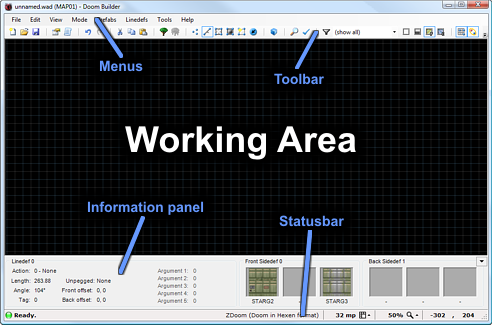

主界面窗口由以下部分组成：

菜单
菜单非常直观，你会在常见的位置找到大部分常用功能。与文件相关的动作位于“文件”菜单中，与视图相关的动作位于“视图”菜单中，与编辑相关的动作位于“编辑”菜单中。
工具栏
最常用的动作和选项位于菜单正下方的工具栏上。
信息面板
当你在工作区中高亮（Highlight）或指向某个特定元素时，此面板会显示关于该元素的简要摘要。你可以点击右侧的小箭头按钮来最小化信息面板，从而最大化你的工作区域。
状态栏
Doom Builder 会在状态栏中显示当前状态。左侧有一个小指示灯（LED），当 Doom Builder 空闲时它会变为绿色。指示灯变为黄色时，表示 Doom Builder 正在执行某些后台工作。指示灯为红色时，表示 Doom Builder 正忙于执行某个动作。紧挨着状态指示灯的右侧是当前状态的说明。它还会显示结果说明，并在执行动作时闪烁指示灯。
状态栏右侧是网格（Grid）大小（以地图像素为单位）、缩放百分比和当前鼠标坐标。你可以点击网格大小和缩放百分比旁边的按钮，弹出相关菜单，以更改这些设置中的任意一项。